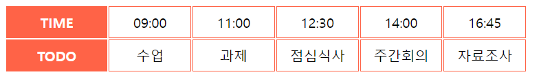

아래 그림과 같이 table을 이용하여 시간표를 만들어 봅시다. 2개의 배열에 저장된 값을 사용하세요. 웹페이지를 요청하면 바로 화면에 출력하는 것으로 함수는 사용하지 않습니다. 
//자바스크립트 배열 const time = ['09:00','11:00','12:30','14:00','16:45'] const todo = ['수업','과제','점심식사','주간회의','자료조사']